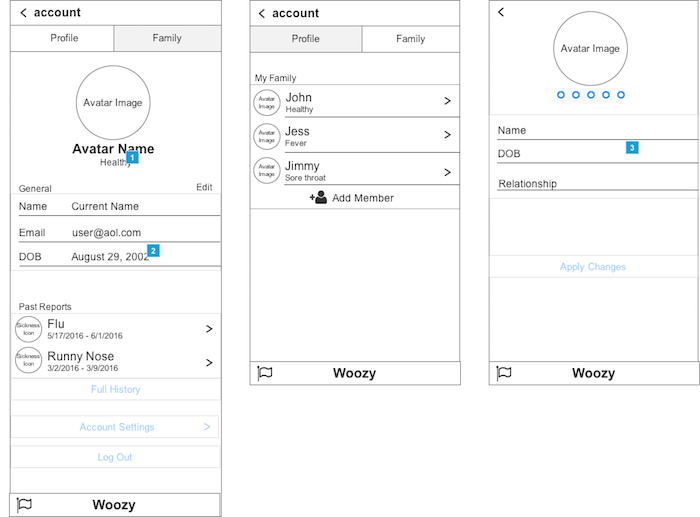

Currently, I am a second-year Graduate student at Cornell Tech in NYC, pursuing a Dual Masters Degree in Information Systems and Connective Media. Previously, I received my Bachelors in Web and Mobile Computing, with a focus on Human Computer Interaction. I have had the opportunity to work on exciting products with Pandora, Amazon, Google Accessibility, and Hudl. Furthermore, I am passionate about researching and developing assistive technology for people with disabilities. #A11Y.
My Full Story


ReportAll
Overview
ReportAll is a templated reporting app for collaborative/crowdsourced journalism with a goal to engage trusted community members in local reporting. This allows news reporters to get the information they need from trusted members in their local communities, even if they can’t be on the scene. This will be a supplement to current reporting standards.
Tech Stack
- React Native
- Firebase Database
- Twitter API
Demo
Source Code
- GitHub Repo: here
PicSpot
Overview
PicSpot was a partnered project between Cornell Tech and Amazon. PicSpot is a mobile app that filters through a users photo library to help find the photos worth sharing with families, friends, and on social media. View the demo below for more detail!
Tech Stack
- React Native
- Firebase Database
- Google Vision API
Final Presentation + Demo
Source Code
- GitHub Repo: here
Bean+ - Door Assistant
Overview
Unfortunately, as a deaf individual, many of the hotels, apartments, or dorms I have lived in are not accessible. I have experienced countless times where someone will knock on my main door and I cannot hear it. This frequent issue motivated me to create a "door assistant" prototype, of what could be a potential solution to ensure residents with hearing loss can hear someone knocking on their door.
Demo
Hardware
Source Code
If you are interested in creating this as well, I have provided all the source code on my GitHub! Please reach out to me if you have any questions!
- GitHub Repo: here
Bean+ - Door Assistant
Overview
Overview
Automatic Speech Recognition (ASR) has been proven to be a useful tool to enable users to utilize their speech in text form on their device. It is used in many situations such as watching videos on YouTube where automatic captions generated or asking Siri on an iPhone to find the closest coffee shop. In the Center for Accessibility and Inclusion Research at Rochester Institute of Technology, I researched how ASR software could assist deaf students in the classroom, specifically when working with hearing students.
One frequent issue with ASR is the inaccuracy of text output (see image above for example!). This technical issue was the focus of my research and how ASR could still be accessible to deaf students despite this constraint.
If you are interested in reading about my research in full, please view my successful publications below!
Publications
Eye Movements of Deaf and Hard of Hearing Viewers of Automatic Captions
Kevin Rathbun, Larwan Berke, Christopher Caulfield, Michael Stinson, Matt Huenerfauth. Journal on Technology and Persons with Disabilities, CSUN.
Publication available: here
Deaf and Hard-of-Hearing Perspectives on Imperfect Automatic Speech Recognition for Captioning One-on-One Meetings
Larwan Berke, Christopher Caulfield, and Matthew Huenerfauth. Annual SIGACCESS Conference on Computers and Accessibility (ASSETS'17)
Publication available: here
Woozy Labs
Overview
Woozy believes sharing germs online is better than sharing them in real-life.
With everyone’s contribution, we can slow the spread of germs in our families and communities. Woozy, is a real-time community health resource for sickness trends, recall alerts, and sickness symptoms.
All in one place.
Project Task
During my four-month internship at MetroStar Systems, as a User Experience Designer, I worked with a product manager, two mobile developers, and a quality analyst to create the next version of the Woozy app which focused on integrating a user profiling system, enhanced sickness reporting capabilities, and an interface redesign.
To create the best possible solution, I interviewed several families, about their experiences with the app and current pain points to identify potential requirements. These requirements formulated from the interviews were used to generate "User Stories" for the low and high fidelity prototype. After iterating and validating the prototypes through usability testing, it was handed off to the development team for implementation.
Below are some example screenshots of the profiling system integration into the Woozy app.
High Fidelity Prototype
Low-Fidelity Mockup and User Flow
